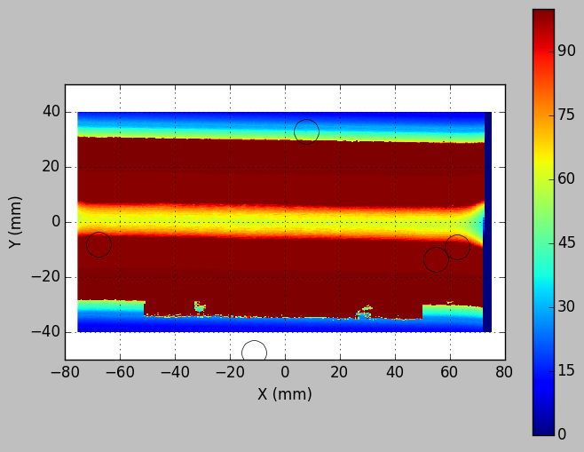
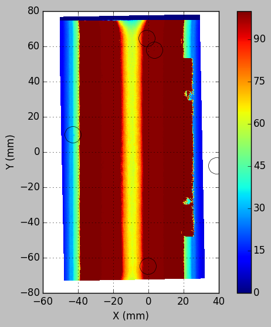

#2015/01/23 added leveling in transformation (transformed data are saved after leveling).#2015/01/13 from OP1S10_analysisfrom fit_cylinder import*from pySurf.points import*from calibrate_align import*
Once deleted, variables cannot be recovered. Proceed (y/[n])? y
Using matplotlib backend: Qt4Agg
Populating the interactive namespace from numpy and matplotlib
Settings
# 20150115 correct from 20140111 #Markers are coordinate values read on positioning (x inverted wrt operator coordinates).# Saved data have both x and y inverted wrt operator coordinates).# We want to refer to sample cordinates on the glass=operator (for mandrel invert x),# then:# - reference points on mandrel from CMM must be inverted only in x for 180 rotation aroun oa# - reference points on glass are inverted in x for machine->operator# - surface data must be inverted in x and y, same scaling for calibration.#original multiplier before Op1S16 was (-1.,1.) for both markers. # Changed to get a better result, but I don't really understand the reason.markers1=np.array([[62.52,-9.16],[55.03,-13.50],[7.91,32.89],[-11.13,-47.28],[-67.56,-7.94]])markers1=markers1*np.array((1.,1.))markers2=np.array([[-0.935,64.404],[3.348,57.679],[-42.893,9.760],[38.710,-7.826],[-0.110,-64.799]])markers2=markers2*np.array((1.,1.))gscale=(-1,-1,1)mscale=(-1,-1,1)
#always run thisgfile=r'measure_data\2015_07_27\01_op1S16_xysurf_Height.txt'cfile=r'measure_data\2015_05_20\04_mandrel09_xysurf_Height.txt'outfolder='OP1S16'imsize=(281,3001)
Alignment
# create loggerlogger = logging.getLogger()logger.setLevel(logging.DEBUG)logfile=os.path.join(outfolder,'aligncal_log.txt')ifnot(os.path.exists(os.path.dirname(logfile))): os.makedirs(os.path.dirname(logfile))# create console handler and set level to debugch = logging.StreamHandler()ch.setLevel(logging.DEBUG)fh = logging.FileHandler(logfile)fh.setLevel(logging.DEBUG)# create formatterformatter = logging.Formatter('%(asctime)s - %(name)s - %(levelname)s - %(message)s')# add formatter to chch.setFormatter(formatter)fh.setFormatter(formatter)# add ch to loggerlogger.addHandler(ch)logger.addHandler(fh)
trans=find_transform(markers1,markers2)
C:\Anaconda\lib\site-packages\numpy\core\fromnumeric.py:2499: VisibleDeprecationWarning: `rank` is deprecated; use the `ndim` attribute or function instead. To find the rank of a matrix see `numpy.linalg.matrix_rank`.
VisibleDeprecationWarning)
INFO:root:stdv of markers distance errors from barycenter: 0.443716589048
2015-08-27 13:53:28,977 - root - INFO - stdv of markers distance errors from barycenter: 0.443716589048
INFO:root:rotation angle (degrees): -91.0046780985 +-0.230883604265
2015-08-27 13:53:28,999 - root - INFO - rotation angle (degrees): -91.0046780985 +-0.230883604265
INFO:root:errors in markers position after rotations:
[[ 0.21123979 -0.60026714]
[ 0.02357702 0.08748366]
[-0.66075873 0.09464397]
[ 0.45071789 0.14001273]
[-0.02477597 0.27812679]]
2015-08-27 13:53:29,007 - root - INFO - errors in markers position after rotations:
[[ 0.21123979 -0.60026714]
[ 0.02357702 0.08748366]
[-0.66075873 0.09464397]
[ 0.45071789 0.14001273]
[-0.02477597 0.27812679]]
Sample data are calibrate for stage bending by subtracting data fome scan on flat mandrel. Can process more than one file in sequence. All settings are defined by settings file.
plt.close('all')
#verify the reference points position on intensity datadf=gfile.replace('Height','Intensity')ip=calibrate_align(df, cfile=None,trans=trans,pshape=imsize, gscale=gscale,outfolder=outfolder,nolevel=1)plt.figure('Original data')plt.plot(markers1[:,0],markers1[:,1],'o',markerfacecolor='none', c='w',lw=20,markersize=20)plt.figure('Transformed data')plt.plot(markers2[:,0],markers2[:,1],'o',markerfacecolor='none', c='w',lw=20,markersize=20)plt.savefig(os.path.join(outfolder,fn_add_subfix(os.path.basename(df),'','.png')))#f=os.path.join(outfolder,fn_add_subfix(os.path.basename(df),'_transformed_matrix','.dat'))#save_points(ip,f,shape=(281,2961),matrix=1,fill_value=-100.)display(plt.figure('Original data'))display(plt.figure('Transformed data'))
INFO:root:Glass data read from measure_data\2015_07_27\01_op1S16_xysurf_Intensity.txt
2015-08-05 14:38:15,216 - root - INFO - Glass data read from measure_data\2015_07_27\01_op1S16_xysurf_Intensity.txt
INFO:root:as (963321L, 3L) array.
2015-08-05 14:38:15,217 - root - INFO - as (963321L, 3L) array.
WARNING:root:calibration file not provided, skip calibration.
2015-08-05 14:38:15,220 - root - WARNING - calibration file not provided, skip calibration.
WARNING:root:Apply transformation to data points.
2015-08-05 14:38:15,437 - root - WARNING - Apply transformation to data points.
resampling...
resampling...
INFO:root:Plotting and saving data in OP1S16
2015-08-05 14:39:22,240 - root - INFO - Plotting and saving data in OP1S16


#here signs are put arbitrarily to aligh transformed cylinder. gscale and mscale must be the#samerpoints=calibrate_align(gfile, cfile,trans,imsize, outfolder,gscale=gscale,mscale=mscale)
INFO:root:Glass data read from measure_data\2015_07_27\01_op1S16_xysurf_Height.txt
2015-08-27 13:59:17,907 - root - INFO - Glass data read from measure_data\2015_07_27\01_op1S16_xysurf_Height.txt
INFO:root:as (963321L, 3L) array.
2015-08-27 13:59:17,908 - root - INFO - as (963321L, 3L) array.
INFO:root:calibration performed with data from file measure_data\2015_05_20\04_mandrel09_xysurf_Height.txt
2015-08-27 14:00:16,785 - root - INFO - calibration performed with data from file measure_data\2015_05_20\04_mandrel09_xysurf_Height.txt
INFO:root:as (1803601L, 3L) array.
2015-08-27 14:00:16,786 - root - INFO - as (1803601L, 3L) array.
WARNING:root:Apply transformation to data points.
2015-08-27 14:00:16,930 - root - WARNING - Apply transformation to data points.
resampling...
resampling...
INFO:root:Plotting and saving data in OP1S16
2015-08-27 14:01:27,698 - root - INFO - Plotting and saving data in OP1S16
fit_func=cone_error3 #function to be minimizedoutSubfix='_cone'#the name of output file is the datafile with this subfix addeddatafile='OP1S16/01_op1S16_xysurf_Height_transformed.dat'#datafile already calibrated and alignedplotTitle='OP1S16'def p(x): print x # callback function #passed to minimization to print each step.
#create points to be fit from a subset of points.pts=get_points(datafile,delimiter=' ')pts[:,2]=pts[:,2]/1000.#data are um, convert to mm before fit
pts=crop_points(pts,(-43,25),(-60,63))#level planepts,pl=level_points(pts,returnPars=1)pts[:,2]=pts[:,2]-pts[np.argsort(pts[:,2])[20],2]c=crop_points(pts,(-43,25),(-50,50)) #[0:-1:1000,:]odr2=(0,220.5,0,-np.sin(np.arctan(0.374/180*np.pi))) #use nominal value for guess directionresult=minimize(fit_func,x0=(odr2), args=(c,),options={'maxiter':500},method='Nelder-Mead')#,callback=p)print'-----------------------------------'print'Results of fit on region:'print result odr=result.xfom,deltaR,coeff=fit_func(odr,c,extra=True)print'Angle of cone axis with y axis (deg):'print np.arccos(np.sqrt(1-(odr[-2:]**2).sum()))*180/np.piprint'Cone parameters (angle(deg), R@y=0):'print np.arctan(coeff[0])*180/np.pi,coeff[1]
-----------------------------------
Results of fit on region:
status: 0
nfev: 626
success: True
fun: 0.025006738531221082
x: array([ -9.00158140e+00, 2.19471946e+02, -1.54681137e-03,
-2.30490017e-03])
message: 'Optimization terminated successfully.'
nit: 371
Angle of cone axis with y axis (deg):
0.159043114304
Cone parameters (angle(deg), R@y=0):
-0.131678342919 219.395796653
#create output results applying the value from fit to all pointsfom,deltaR,coeff=fit_func(odr,pts,extra=True)deltaR[:,2]=deltaR[:,2]*1000print'-----------------------------------'print'Fit on subset is applied to complete set of points:'print'F.O.M.=%s'%(fom)
-----------------------------------
Fit on subset is applied to complete set of points:
F.O.M.=0.0226768245564
#attempt fit on best regionc=crop_points(pts,(-43,20),(-39,61)) #[0:-1:1000,:]odr2=(0,220.5,0,-np.sin(np.arctan(0.374/180*np.pi))) #use nominal value for guess directionresult=minimize(fit_func,x0=(odr2), args=(c,),options={'maxiter':500},method='Nelder-Mead')#,callback=p)print'-----------------------------------'print'Results of fit on region:'print result odr=result.xfom,deltaR,coeff=fit_func(odr,c,extra=True)print'Angle of cone axis with y axis (deg):'print np.arccos(np.sqrt(1-(odr[-2:]**2).sum()))*180/np.piprint'Cone parameters (angle(deg), R@y=0):'print np.arctan(coeff[0])*180/np.pi,coeff[1]
-----------------------------------
Results of fit on region:
status: 0
nfev: 778
success: True
fun: 0.021181031759935885
x: array([ -9.00276091e+00, 2.19276852e+02, -1.73463119e-03,
-7.16948511e-03])
message: 'Optimization terminated successfully.'
nit: 456
Angle of cone axis with y axis (deg):
0.422637256284
Cone parameters (angle(deg), R@y=0):
-0.407498324088 219.205736316
#refit subregion after removing of outliers and levelingfom,deltaR,coeff=fit_func(odr,c,extra=True)deltaR[:,2]=deltaR[:,2]*1000#refine fit on subregion by #relevel on c:pts,tmp=level_points(pts,returnPars=1)print"plane for all pts: ",tmp#c[:,2]=c[:,2]-c[np.argsort(c[:,2])[20],2]#try to clip at 3 sigma, but it doesn't work, you cannot set to 0 need to set to c avg. nan gives error with polyfit:#c[np.where(np.abs(deltaR[:,2])>3*np.std(deltaR[:,2])),2]a=np.where(np.abs(deltaR[:,2]-deltaR[:,2].mean())>3*np.std(deltaR[:,2]))[0]for aa in a: tmp=crop_points(c,c[aa,0]+(-1,1),c[aa,1]+(-1,1)) #cut on square of fixed size around outliers avg=(tmp[:,2].sum()-c[aa,2])/(size(tmp[:,2])-1) #calculate average of other points c[aa,2]=avg#redo planec,tmp=level_points(c,returnPars=1)print"plane for central region: ",tmpc[:,2]=c[:,2]-np.nanmin(c[:,2])result=minimize(fit_func,x0=(odr), args=(c,),options={'maxiter':500},method='Nelder-Mead')#,callback=p)print'-----------------------------------'print'Results of fit on region:'print result odr=result.xfom,deltaR,coeff=fit_func(odr,c,extra=True)deltaR[:,2]=deltaR[:,2]*1000print'Angle of cone axis with y axis (deg):'print np.arccos(np.sqrt(1-(odr[-2:]**2).sum()))*180/np.piprint'Cone parameters (angle(deg), R@y=0):'print np.arctan(coeff[0])*180/np.pi,coeff[1]
plane for all pts: [ -8.11882720e-16 4.64565387e-17 9.57755290e-01]
plane for central region: [ -1.14019967e-02 -5.82422153e-05 7.17099260e-01]
-----------------------------------
Results of fit on region:
status: 0
nfev: 248
success: True
fun: 0.0026158934133140486
x: array([ -1.14807221e+01, 2.19104958e+02, -1.76494296e-03,
-5.97003411e-03])
message: 'Optimization terminated successfully.'
nit: 141
Angle of cone axis with y axis (deg):
0.356694789748
Cone parameters (angle(deg), R@y=0):
-0.340770529566 219.101605101